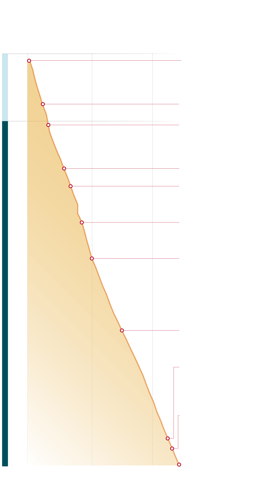

VanDerveer closes out her record-breaking career
Stanford coach Tara VanDerveer announced her retirement Tuesday, ending her 45-year career as a head coach. She won three NCAA championships with the Cardinal and holds the record for career wins among coaches of college basketball for both men and women.
CAREER
WINS
MILESTONES
1,000
500
1. 1978: VanDerveer earns
her first career win at
Idaho against Northern
Montana.
1978-79
PRE-STANFORD
1980-81
2. 1983: VanDerveer has
her 100th win while at
Ohio State by beating
Michigan 74-60.
3. 1985: VanDerveer has
her first win with Stanford
— her 153rd win overall —
in a victory over Hawai’i.
1985-86
4. 1990: VanDerveer earns
her first national title when
Stanford defeats Auburn.
1990-91
5. 1992: VanDerveer earns
her second national title
by defeating Western
Kentucky 78-62.
1995-96
6. 1996: VanDerveer has
her first win against Pat
Summitt when the
Cardinal defeat Tennessee
82-65.
7. 2000: Stanford defeats
Pacific 73-65, marking
VanDerveer’s 500th win.
2000-01
STANFORD
2005-06
8. 2008: VanDerveer leads
Stanford’s return to the
Final Four as they beat
Maryland 98-87.
9. 2020: Stanford defeats
Pacific 104-61, making
VanDerveer the coach with
the most wins of all time
in women’s basketball.
2005-06
10. 2021: VanDerveer earns
her third national title
against Arizona and
becomes the first coach to
win national titles 30 years
apart.
2015-16
2020-21
11. 2024: VanDerveer
retires with 1,216 wins.
2023-24
Graphic: Jenny Kwon / The Chronicle · Sources: Sports-Reference.com, Ohio University, Chronicle reporting
VanDerveer closes out her record-breaking career
Stanford coach Tara VanDerveer announced her retirement Tuesday, ending her 45-year career as a head coach. She won three NCAA championships with the Cardinal and holds the record for career wins among coaches of college basketball for both men and women.
CAREER
WINS
500
1,000
1
1978-79
PRE-STANFORD
1980-81
2
3
1985-86
4
1990-91
5
1995-96
6
7
2000-01
STANFORD
2005-06
8
2010-11
2015-16
9
2020-21
10
2023-24
1,216
MILESTONES
1. 1978: VanDerveer earns her first career win at Idaho
against Northern Montana.
2. 1983: VanDerveer has her 100th win while at Ohio State by
beating Michigan 74-60.
3. 1985: VanDerveer has her first win with Stanford — her
153rd win overall — in a victory over Hawai’i.
4. 1990: VanDerveer earns her first national title when
Stanford defeats Auburn.
5. 1992: VanDerveer earns her second national title by
defeating Western Kentucky 78-62.
6. 1996: VanDerveer has her first win against Pat Summitt
when the Cardinal defeat Tennessee 82-65.
7. 2000: Stanford defeats Pacific 73-65, marking
VanDerveer’s 500th win.
8. 2008: VanDerveer leads Stanford’s return to the Final
Four as they beat Maryland 98-87.
9. 2020: Stanford defeats Pacific 104-61, making VanDerveer
the coach with the most wins of all time in
women’s basketball.
10. 2021: VanDerveer earns her third national title against
Arizona and becomes the first coach to win national titles
30 years apart.
11. 2024: VanDerveer retires with 1,216 wins.
Graphic: Jenny Kwon / The Chronicle
Sources: Sports-Reference.com, Ohio University, Chronicle reporting